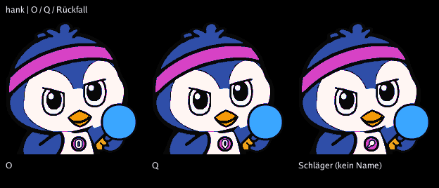
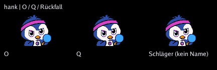
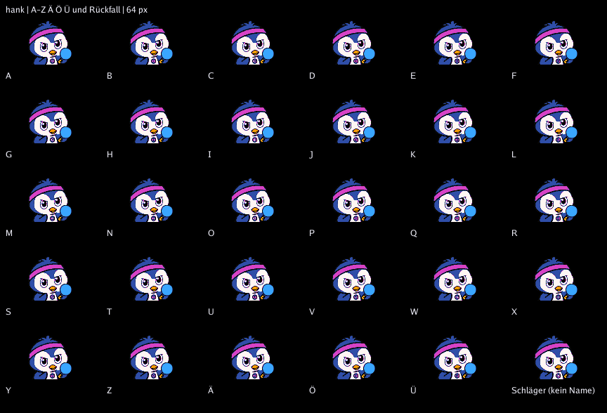
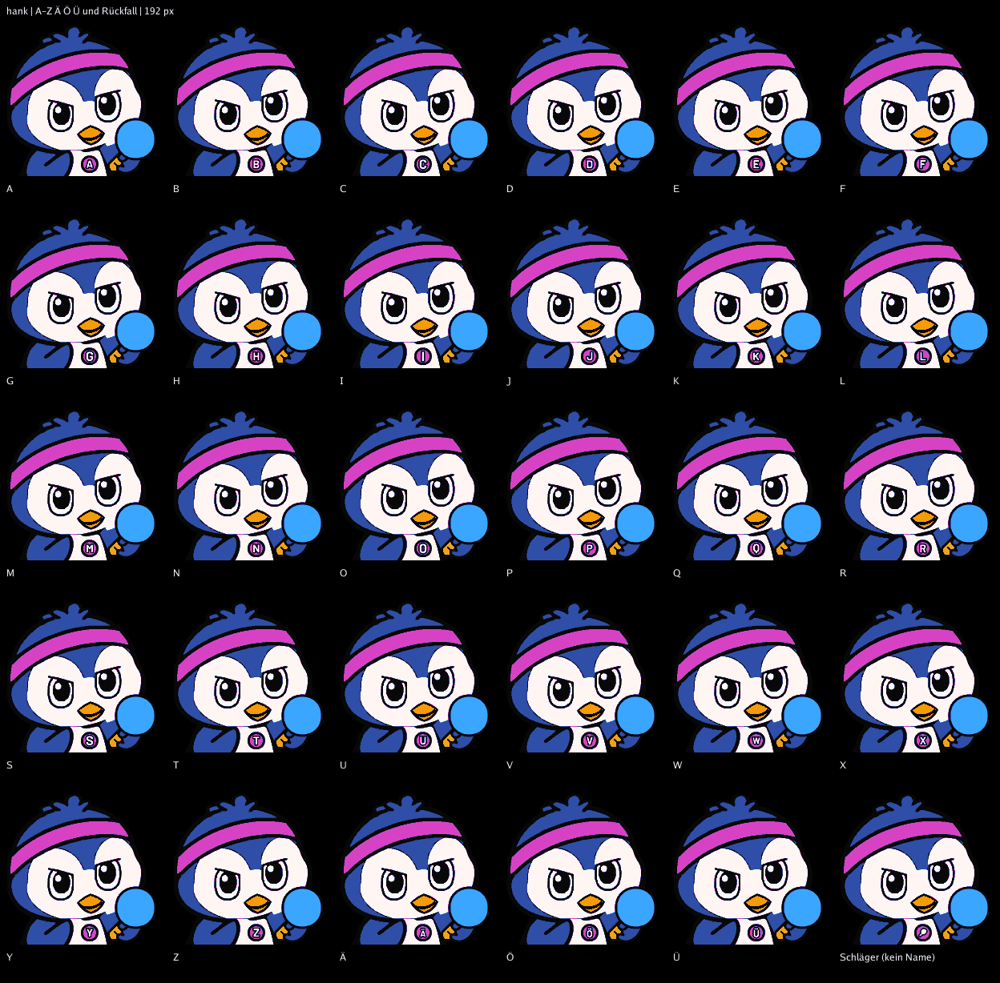
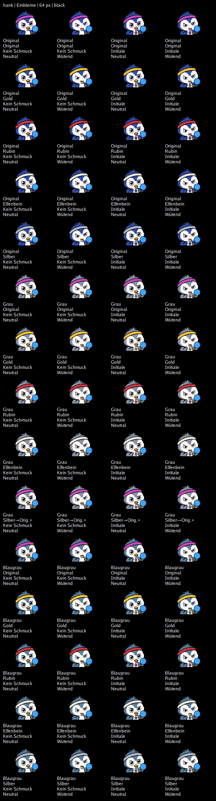
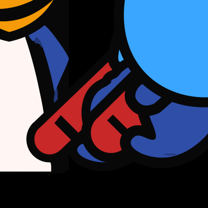
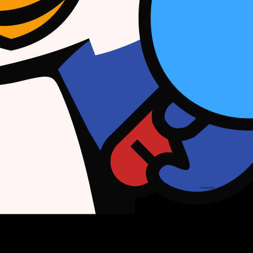

Schmuck: Kein Schmuck oder Initiale. Schild 48 × 48 Einheiten. Namenlose Figuren zeigen einen Schläger. Wangen bleiben entfernt.




Original, Gold, Rubin, Elfenbein, Silber. * Silber ist auf Grau weiterhin unzulässig und fällt auf Original zurück.



Embleme 192 px Navy · 192 px Schwarz · 28 px Navy · 28 px Schwarz · Initialen 28 px · Messwerte
Bei 64 px: etwa 7 Pixel Schildbreite und etwa 3–4 Pixel Buchstabenhöhe. Breite Buchstaben und Umlautpunkte sind eingeschränkt lesbar. Bei 28 px bleibt hauptsächlich das farbige Abzeichen. Echter LED-Test offen.